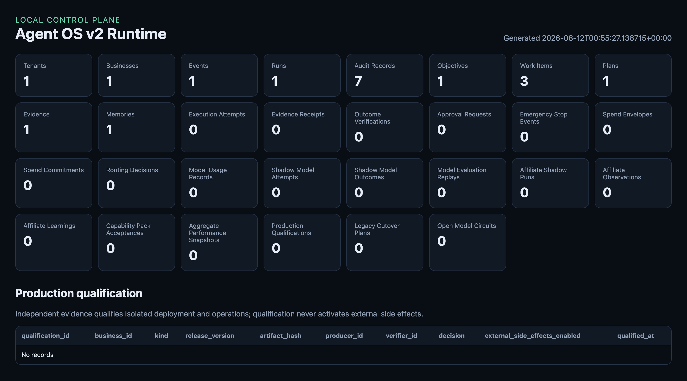
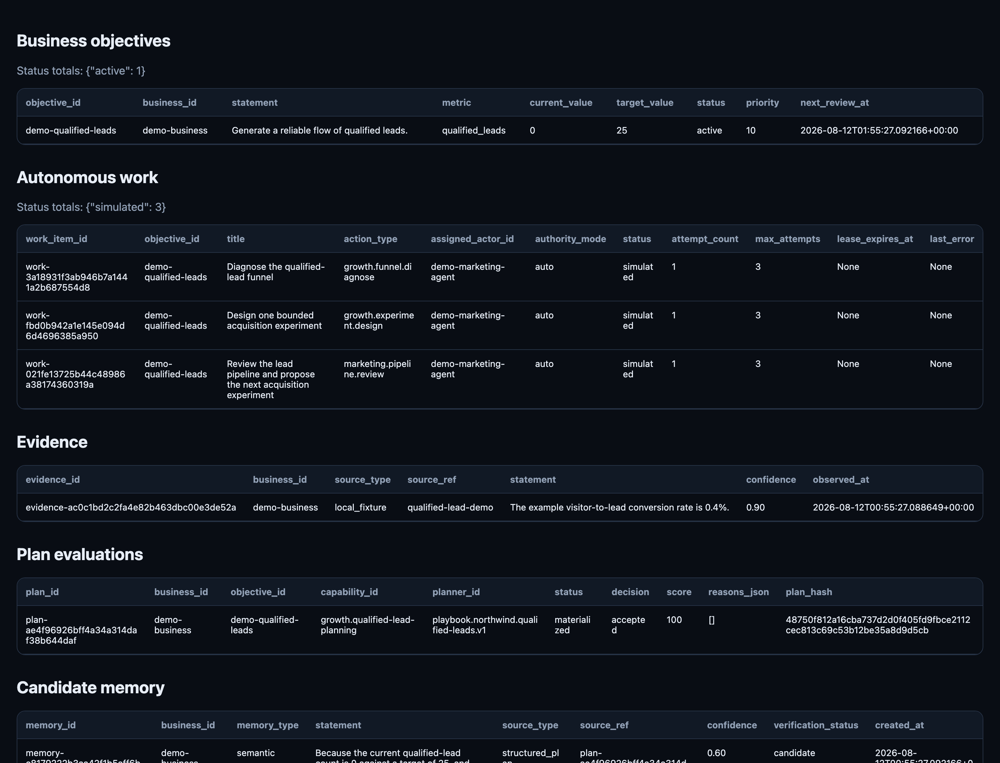

Agent OS v2
A headless, event-driven operating system for autonomous business operations — built as a resellable platform, not a single client's automation. The kernel is business-agnostic; departments are optional modules; industry behavior lives in packs; every client supplies isolated configuration and credentials.
System lineage
Neither legacy system is renamed, moved, or disabled until a documented cutover proves its replacement and its rollback.
Product boundaries
Foundation principles
The dashboard is the control plane. Slack, Telegram, Discord, Teams, and email are replaceable channel adapters — never canonical.
Atlas is event-driven. The durable system is always on; a chat session with a model is not.
A deterministic policy engine — not an LLM — decides whether an action is automatic, notify-and-proceed, approval-required, or forbidden.
Learning is evidence-driven and promoted through evaluation. Agents cannot rewrite safety policy, permissions, or their own evaluation criteria.
Every tenant and legal entity is isolated by construction, not by convention.
Financial access is read-only by default. Reconciliation and recommendations are autonomous; money movement is not.
Execution truth
Every claimed action moves through an explicit evidence chain before it counts as done. Nothing short-circuits from "attempted" to "verified."
External attempts require a fresh target precondition. Completion claims require fresh post-attempt read-back evidence, reviewed by a separate, independent QA actor — not the agent that did the work.
Build sequence — selected goals
| Goal | What it locked in |
|---|---|
| 6 | 19 reusable, versioned role constitutions with distinct SOUL files and boundary evaluations. |
| 7 | Governed knowledge catalog with source-hash inventory and scoped, purpose-bound retrieval. |
| 8 | Immutable execution-evidence receipts; completion claims fail closed without verified evidence. |
| 10–11 | Offline model-routing control plane plus a one-shot runtime that resolves credentials outside the database and never auto-falls-back. |
| 12 | Northwind affiliate shadow loop — read-only sources, frozen research windows, independent re-verification before anything becomes learning. |
| 13 | Portfolio capability packs across 13 business functions, every one read-only and inert until explicitly activated. |
| 14 | Production packaging contract: PostgreSQL, hosted secrets, external KMS attestation, staged one-capability-at-a-time cutover. |
The control plane, running


Both captures come from the repository's own demos — run agent_os.cli demo and serve-dashboard and you get this same view against your own simulated data.
Repository map
The hard part was never getting an agent to attempt something. It's knowing — with evidence, not a transcript — whether the attempt actually happened, and stopping the system from grading its own homework. That's what the evidence chain, the independent QA boundary, and the default-deny policy engine are for. The platform is designed to be sold and operated across clients, not rebuilt for each one.